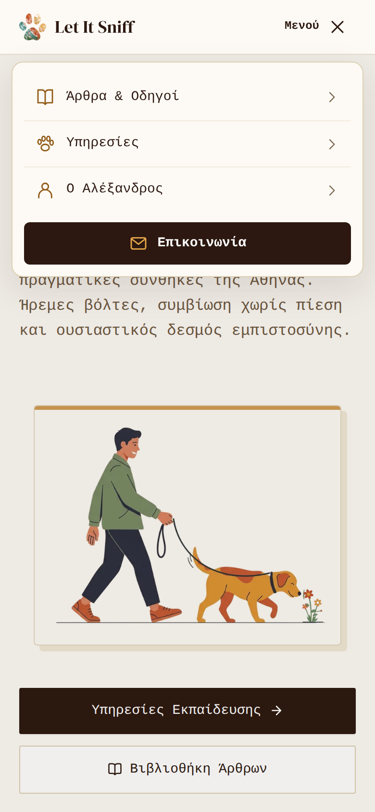
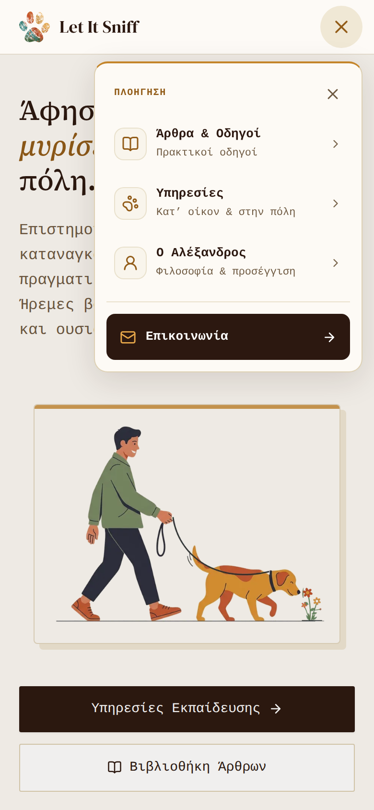
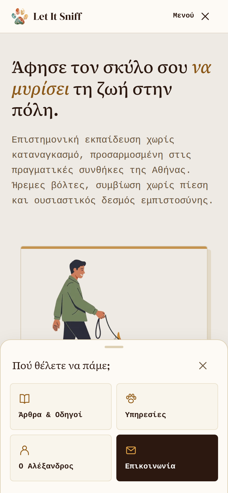

1Compact dropdown
224 px high · covers 25% of the screen
Simple rows, clear contact button.


Try option 1 · Tap “Μενού” to open and close.
Let It Sniff · Mobile navigation
Same landing page, 390 × 844 viewport. Current open menu panel: 59% of the screen.
224 px high · covers 25% of the screen
Simple rows, clear contact button.

Try option 1 · Tap “Μενού” to open and close.
280 px wide · covers 28% of the screen
Selected: icon tiles and a clearer contact action.

View refined screenshot · Implemented in the site.
263 px high · covers 31% of the screen
Four tiles, easier to reach with your thumb.

Try option 3 · The headline remains visible.
Selected: 2. Refined spacing, grouped icons, short descriptions, and a direct contact action.